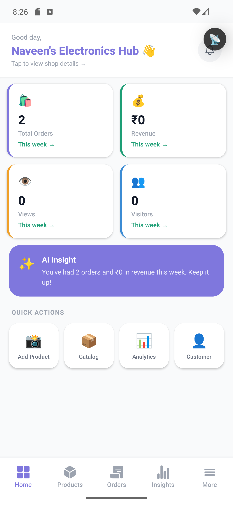

business_current

emulator_current

Run time: 2026-03-26T20:28:01
Executed: 4 | Passed: 1 | Failed: 1 | Blocked: 2 | Confirmed bugs: 1
| Case ID | Title | Status | Details |
|---|---|---|---|
| ML-001 | Customer email sign-in completes backend authentication | BLOCKED | Firebase auth and backend API calls completed, but post-login navigation could not be treated as pass because the customer Home screen immediately threw a React render error. |
| ML-002 | Customer home and search click-through load after login | FAIL | Confirmed product defect. After successful customer login, Home crashes with ReactNativeJS error: Objects are not valid as a React child (found: object with keys {query, timestamp}). Search flow could not continue from Home. |
| ML-003 | Business email login and dashboard load | PASS | Business login succeeded from a clean app state and the business dashboard loaded with bottom tabs including Products, Orders, and More. |
| ML-004 | Business AI Advisor click-through from dashboard | BLOCKED | Business dashboard state was valid, but AI Advisor navigation was not reliably validated in the same pass with the current raw adb/uiautomator harness. |
| Bug ID | Severity | Title | Evidence | Likely Source |
|---|---|---|---|---|
| BUG-EMU-001 | High | Customer Home crashes after login when recent search history contains objects | ReactNativeJS log: Objects are not valid as a React child (found: object with keys {query, timestamp}) | d:/Local_shop/nearshop-mobile/app/(customer)/home.jsx lines 512-518 render recentSearches items directly as text and use encodeURIComponent(query), but API history items are objects. Data is set at lines 128-129 from historyRes.value?.data?.history. |
